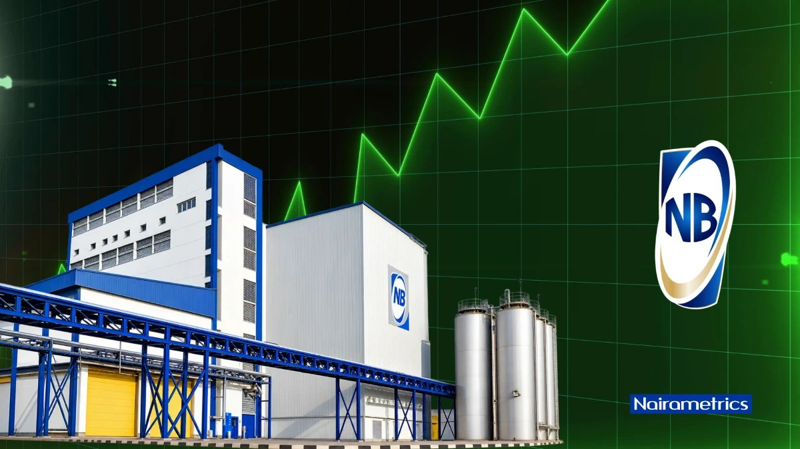

Nigerian Breweries clears N72.17 billion accumulated losses, moves closer to dividend resumption

Nigerian Breweries Plc has erased its accumulated losses, reporting positive Group retained earnings of N34.79 billion as of September 30, 2026. That compares with an accumulated deficit of N72.17 billion at the end of December 2025. Retained earnings at the parent company level also turned positive, reaching N37.01 billion from a deficit of N77.09 billion.
The recovery was supported by continued profitability, lower finance costs and stronger cash generation, according to the brewer’s unaudited results for the nine months ended September 30. Nigerian Breweries reported profit after tax of N92.95 billion for the first half of the year, taking Group retained earnings to N13.65 billion by June. A further N21.14 billion in profit after tax in the third quarter brought the nine-month total to N114.10 billion.
Finance costs fell 61.3% to N11.20 billion from N28.90 billion in the corresponding period of 2025. The company also reduced loans and borrowings from N59.71 billion at the end of December 2025 to zero by September 2026. Together, improved profitability and the lower financing burden helped the company absorb its previous accumulated losses and rebuild positive retained earnings at both levels.
The change strengthens the company’s potential capacity to pay dividends, but Nigerian Breweries has not announced a new distribution. Any future dividend would depend on sustained profitability, adequate distributable reserves and the required corporate approvals. The parent company’s retained earnings are particularly relevant because dividend-paying capacity depends on the distributable profits of the legal entity declaring the dividend.
The company has gone three consecutive financial years without a dividend. Its last distribution was for the 2022 financial year, when shareholders received N1.43 per share: an interim dividend of 40 kobo and a final dividend of N1.03. The total payout was approximately N13.87 billion, with the final dividend approved in April 2023. The return to positive retained earnings may raise expectations of a possible distribution for 2026, but no such payment has been confirmed.
Source: Nairametrics